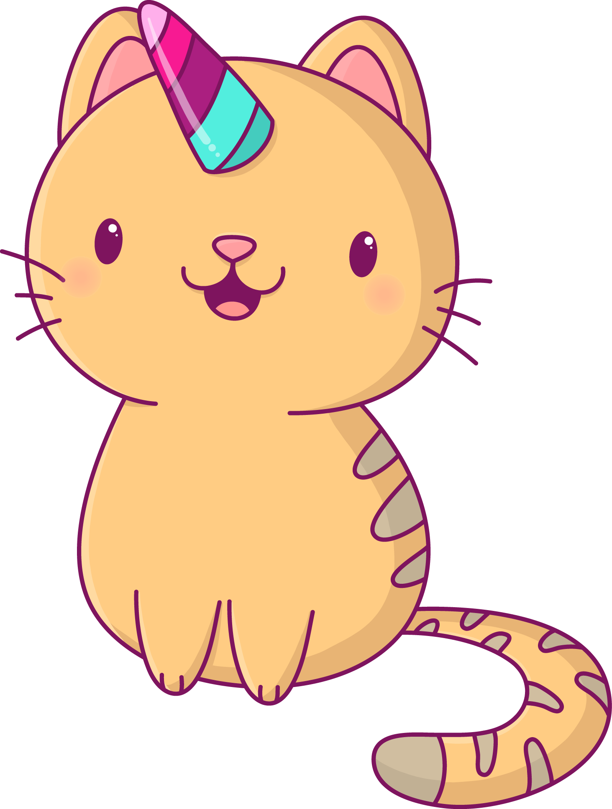

Deskripsi Singkat
HELLO.........
Kitten merupakan kucing laki-laki yang berasal dari blasteran ras anggora dan lokal.
pada saat ini kitten berusia sekitar 5 tahun, ia berbulu halus dan tebal. warna bulunya campuran antara warna grey dan oranye
